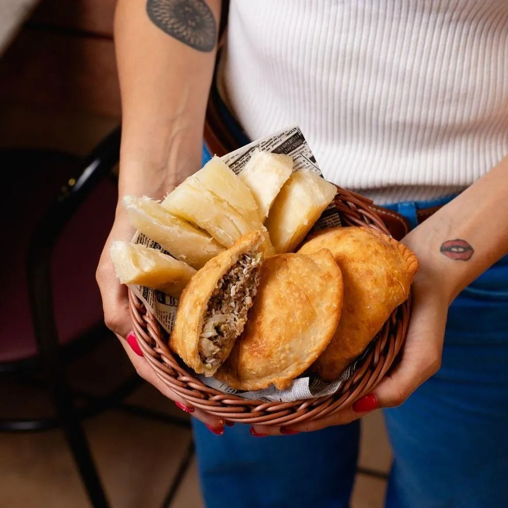
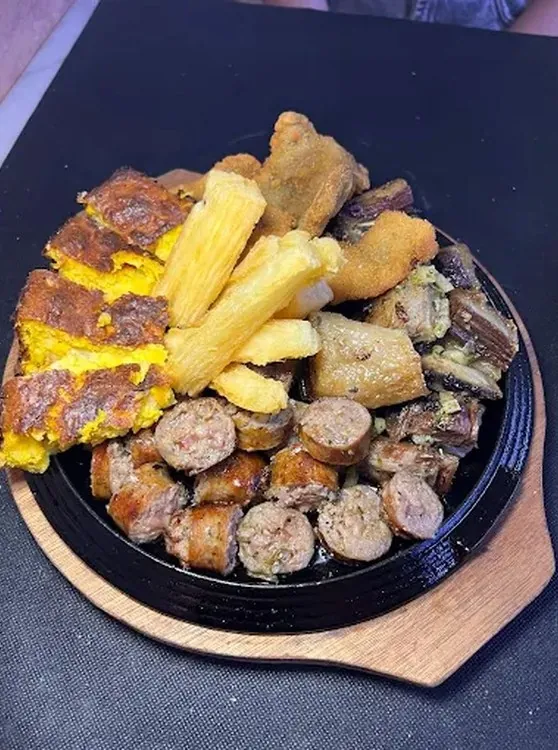
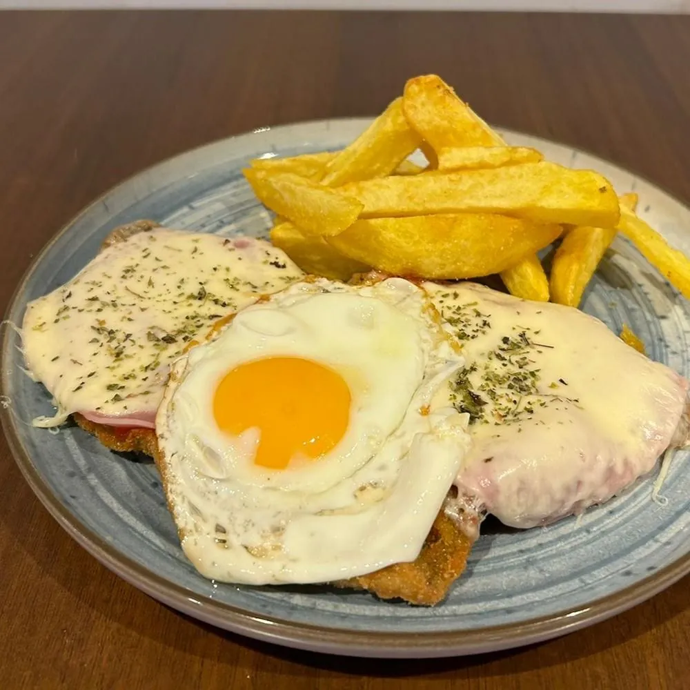
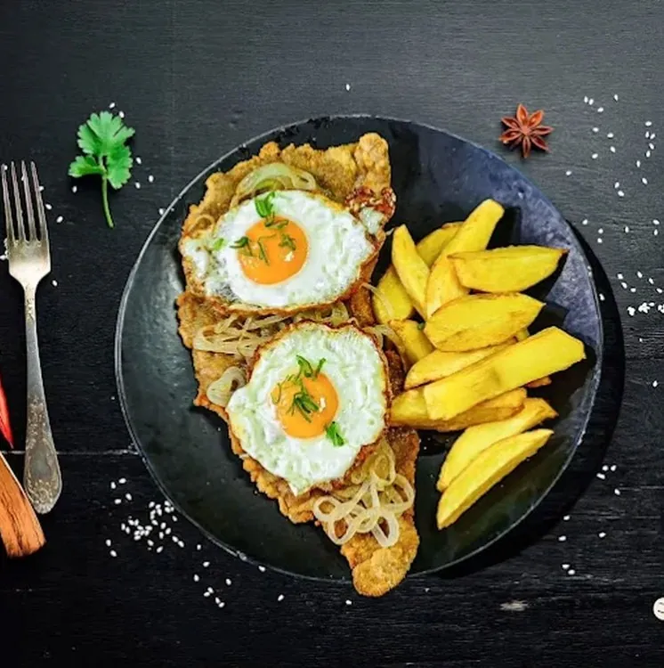
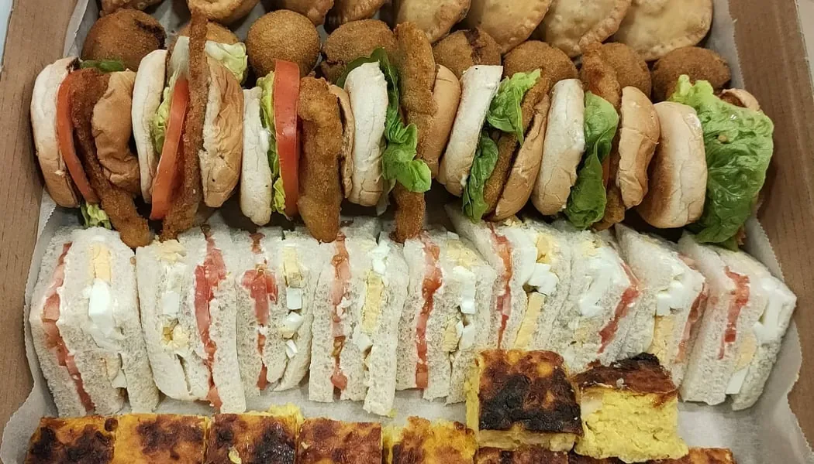

★★★★★
Es la primera vez que venimos y quedamos encantados. Pedimos un poco de todo para probar y estaba todo 10 de 10.
Mba'éichapa! ¿Qué tal? en guaraní
Chipa guazú recién horneada, mbejú que estira, vorí vorí de gallina casera y las milanesas más generosas de la ciudad. Recetas de la abuela, cocinadas cada día por la chef Loren Vera.
No es lo que somos… es lo que te hacemos sentir. Aquí se come como en casa de la abuela, se habla guaraní en la barra y cada plato sale de la cocina con un trocito de nuestra tierra.
Las de los padres y abuelos de Loren, de San José de los Arroyos a tu mesa.
Masa de empanada, chipa, mbejú y caldos se preparan cada día en nuestra cocina.
Nadie se va con hambre. Platos para compartir y precios de barrio.
Cocina paraguaya y española casera, terraza y ambiente familiar. Las mascotas también son bienvenidas.

Lorenza Vera —Loren para todos— llegó a España hace más de 17 años con una maleta llena de recetas. Estudió cocina, trabajó en restaurantes y, en plena pandemia, se atrevió a abrir su propio local para cumplir un sueño:
«Demostrar que la comida paraguaya es tan excelente como las demás.»— LOREN VERA
Hoy, junto a su familia —su hijo José Manuel es su «mano derecha»— y un equipo que te atiende hasta en guaraní, Loren Restobar es punto de encuentro para paraguayos que echan de menos su tierra y para barceloneses que la descubren por primera vez.
Te lo ponemos fácil. Pasa el ratón (o toca) cada plato y descubre qué es, cómo se dice y por qué en Paraguay no puede faltar.

Pastel horneado de choclo (maíz tierno), huevo, cebolla y queso fresco. Esponjoso, dorado y sin trigo.

No es una sopa: es un bizcocho salado de harina de maíz, cuajada, queso y cebolla.

Torta a la plancha de almidón de mandioca, maíz y queso. Crujiente por fuera, tierna por dentro.

Caldo de gallina casera con bolitas de harina de maíz y queso. Abrazo en forma de plato.

Masa casera y relleno jugoso. La de carne lleva huevo duro, comino y pimiento, como manda la tradición.

La yuca. En Paraguay acompaña cada comida como aquí el pan: hervida, frita «brava» o salteada en chyryry.

Asado, chorizo, chinchulín y pollo, con mandioca y chipa guazú, servidos humeantes en brasero.

Ternera o pollo rebozados al momento, en raciones que desbordan el plato. También en sándwich.
Hay platos que piden tiempo, olla grande y paciencia. Los guardamos para el fin de semana, cuando media Barcelona paraguaya viene a buscarlos.
Cuenta atrás para el próximo vorí vorí
Caldo de gallina casera con bolitas de maíz y queso.
Nuestro caldo de pescado, espeso y reconfortante.

Sopa de carne machacada con tortillita paraguaya y mandioca.
Para compartir, con chipa guazú y mandioca.
Así es la carta que te damos en la mesa: los clásicos paraguayos, las milanesas, los especiales del finde y hasta un pequeño diccionario guaraní. Pasa las hojas, tócalas para leerlas en grande o llévatela en PDF.
Toca la hoja para leerla en grande · desliza para pasar
Pide desde tu app favorita o encárganos por WhatsApp y pasa a recogerlo calentito. Empanadas, milanesas y chipa guazú viajan de maravilla.
Envío rápido por toda la zona. Muchas veces con entrega gratis con Prime.
Pedir en Glovo Uber Eats ★ 4,9 · 43 valoracionesAcepta Ticket Restaurant® en la app. Ideal para la comida de la oficina.
Pedir en Uber Eats
Para llevar Sin comisiones · recoges en localEscríbenos por WhatsApp, te decimos la hora y lo tienes listo en Carrer de la Muntanya 115.
Encargar por WhatsApp
Guaranias de fondo, el chisporroteo del brasero y una mesa que nunca se queda vacía. Síguenos y entérate del plato del día, los especiales del finde y lo que se cuece en nuestra cocina.



Cumpleaños, bautizos, comidas de empresa, afterworks o esa fiesta en casa: preparamos bandejas de bocaditos (empanadas, chipas, croquetas, sándwiches de miga, sopa paraguaya) o te reservamos el local con menú a medida.